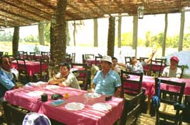

９２．「ギャルソンと呼ばなければ相手にしてくれない。」(エジプト、写真有)
エジプトに出張しているとき突然に３日間の連休が発生した。宿舎の食堂も閉めるから日本人は全員旅行に出るか、
アレキサンドリアの宿舎で自炊してくれと通告があった。知人達と数人で慌ててカイロに行くことにした。
カイロ近辺を観光旅行しながら昼食を取ったときの話である。
全員お腹がすいていたので近くのレストランに入ることにした。まだこの頃我々はエジプト文化に興味津々であっ
たので現地のレストランに入ろうという事になった。ナイル川（近くの現地人がナイルと教えてくれた）の支流が流
れて、岸は砂地であるが少し離れると畑が広がっている。このナイル川は淀んでおり、日本で言えばどぶ川である、
どぶの異様な臭いが漂っている。その近くにチキンを料理するレストランを見つけた、入るかどうかは意見が分かれ
た。どぶ川の異臭がきついからである、それでも入ることにした。こぎれいで露天レストランである、天井には茅み
たいなのが薄く敷き詰められて日よけになっている。

取りあえず料理を注文しながら出来てくるまで、話に盛り上がる。ふと気が付くと料理はなかなか来ないし、後か
ら来た客には既に料理が出ており半分くらい食べ終わっている。彼らの言葉を聞くとフランス語である。もしかして、
フランス語を喋られない人間を馬鹿にしているのではないか我々は判断した。幸い二人程フランスを喋れるのがいて
「ギャルソン、ギャルソン」とウエイターを呼びつけてフランス語で抗議した。
物の見事に直ぐに料理が出てきた。
ここエジプトの公用語はフランス語です。フランス語を喋れるのは上流階級と見なされ、英語しか喋れないのは馬
鹿にする風潮があったようです。
２００１年１０月２１日 記
|